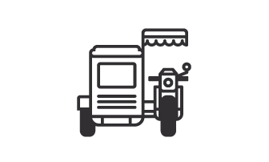

🏠 Return to SJDM
MONTE Nav
Regular
Student
Senior/PWD
Public
Private
Trad.
Modern
Reg.
P2P

Shared
Special
UV Exp
LRT-7
Moto
Car
Est. Fare
₱ 0.00
Distance
0.00 km
Arrival
--:--
MONTE Analyst
00:00:00
Loading...
MONTE Intelligence
Monitoring SJDM transit systems...
Loading...
Syncing weather data...
Density Analyst
Select a destination to assess local congestion probability.
Route Details
Status
Ready for input.
System Settings
Light
Dark
Reset All Data